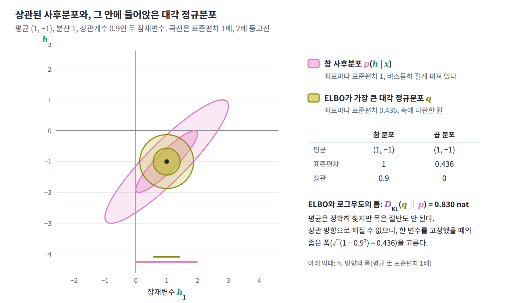
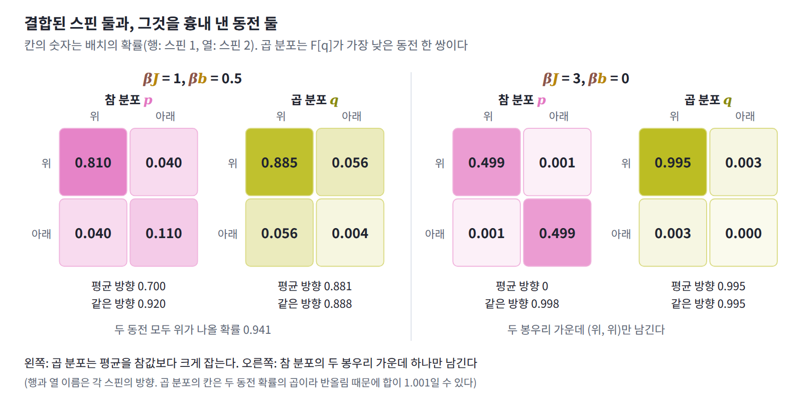

12장 — 평균장 근사
이 장의 물음
VAE의 인코더는 데이터 하나를 받을 때마다 잠재변수의 근사 분포를 내놓는데, 이 분포는 대개 좌표마다 평균과 분산만 따로 정하는 대각 정규분포다. 잠재변수 두 개의 사후분포가 평균 (1, −1), 분산 1, 상관계수 0.9인 정규분포라고 하고, 대각 정규분포 가운데 ELBO가 가장 큰 것을 찾아보자. 평균은 (1, −1)로 정확히 찾아가지만 각 좌표의 표준편차는 1이 아니라 0.436으로 나온다. 근사 분포가 참 사후분포보다 두 배 넘게 좁으니, 모델은 자기 잠재변수를 실제보다 훨씬 확신하는 셈이다. ELBO는 로그우도보다 0.830 nat 아래에서 멈추고 더 올라가지 않는다. 블라이, 쿠쿠켈비르, 매컬리프는 변분 추론 리뷰(2017)에서 이것을 「변분 추론은 일반적으로 사후분포의 분산을 과소평가한다. 이는 목적 함수에서 비롯된 결과다」라고 적었다.

같은 일이 자석에서는 더 크게 나타난다. 이웃한 스핀끼리 결합 J로 묶인 2차원 정사각 격자에서, 스핀마다 이웃 넷을 제각각 보는 대신 그 넷의 평균 방향에만 반응한다고 두고 계산하면 kT = 3.0J에서 자화가 0.776이라는 답이 나온다. 그러나 이 온도의 정확한 자화는 0이고, 64 × 64 격자를 시뮬레이션해도 0.042밖에 되지 않는다. 이 계산은 자석이 kT = 4J까지 자성을 유지한다고 예측하지만, 실제로 자성이 사라지는 온도는 2.269J다. 두 경우 모두 서로 얽힌 변수들을 독립인 것처럼 다룬 근사가 한쪽으로만 틀렸다. 근사한 사후분포는 참 분포보다 좁고, 근사한 자석은 실제보다 더 질서 있다(스핀들이 한쪽 방향으로 더 맞춰 서 있다, 곧 자화가 더 크다). 왜 하필 그쪽으로 틀리며, 이런 근사는 언제 믿을 수 있을까? 이 장은 이 물음을 다음 순서로 풀어 간다.
- 분배함수를 계산할 수 없을 때, 서로 독립인 변수들로 만든 분포 가운데 무엇을 「가장 나은 것」으로 골라야 할까?
- 그렇게 고른 분포에서 변수 하나는 나머지 변수들을 어떻게 보고 있을까?
- 변수마다 이웃이 많아지면 근사가 나아질까, 나빠질까?
- 근사가 틀릴 때 늘 한쪽으로만, 곧 더 좁고 더 질서 있는 쪽으로 틀리는 까닭은 무엇일까?
- 근사가 버린 두 변수 사이의 관계를 되찾을 길이 있을까?
곱 분포: 결합된 스핀 둘을 동전 둘로 흉내 내기
분배함수를 계산할 수 없을 때는 볼츠만 분포 대신 계산할 수 있는 분포를 써야 한다. 그런데 계산할 수 있는 후보는 많다. 그 가운데 무엇을 「가장 나은 것」으로 골라야 할까? 고른 답이 맞는지 확인할 수 있도록, 정확한 답을 아는 가장 작은 계에서 시작하자.
스핀 둘과 동전 둘
위(+1)나 아래(−1)만 향할 수 있는 스핀 두 개가 결합 J로 묶여 있고, 둘 다 같은 편향 b를 받는다고 하자. 에너지는 E = −J s₁s₂ − b(s₁ + s₂)이고 배치(두 스핀이 각각 위(+1)인지 아래(−1)인지 적은 목록 하나. ML의 미니배치와는 다른 말)는 (위, 위), (위, 아래), (아래, 위), (아래, 아래) 넷뿐이므로, 분배함수는 네 항의 합으로 정확히 계산된다. kT = 1로 두고 βJ = 1, βb = 0.5이면 두 스핀이 모두 위를 향할 확률이 0.810, 모두 아래를 향할 확률이 0.110, 서로 반대일 확률이 0.040씩이고, 각 스핀의 평균 방향은 ⟨s⟩ = 0.700이다.
이제 이 정확한 답을 모른다고 치고, 스핀마다 따로 던지는 동전 두 개로 이 분포를 흉내 내 보자. 첫째 동전은 평균 방향 m₁을 가져서 위가 나올 확률이 (1 + m₁)/2이고, 둘째 동전은 m₂를 가지며, 두 동전은 서로 독립이다. 이렇게 변수마다 따로 정한 분포를 곱해 만든 분포를 곱 분포 (변수들이 서로 독립이 되도록 변수별 분포를 곱한 분포, product distribution)라 한다. 곱 분포는 두 스핀이 함께 움직이는 경향, 곧 상관을 표현하지 못한다. 대신 스핀이 수백 개인 계에서도 평균, 에너지, 엔트로피가 스핀별 계산의 합으로 곧바로 나오므로 언제나 계산할 수 있는 후보가 된다. 문제는 후보들 가운데 어느 것을 고르느냐이다.
참 분포를 모르니 「각 스핀의 평균을 참값에 맞춘다」는 기준은 쓸 수 없다. 곱 분포 q에 대해 계산할 수 있는 것은 q로 낸 평균 에너지와 q의 엔트로피인데, 둘을 온도로 엮은 자유에너지 F[q] = ⟨E⟩_q − kT H(q)는 아무 분포에나 매길 수 있다. 게다가 KL의 정의에 볼츠만 분포의 로그 ln p = −βE − ln Z를 넣으면, F[q]와 참 자유에너지 F = −kT ln Z의 차이가 정확히 kT × D_KL(q‖p)라는 것이 나온다. 그러니 Z를 몰라도 F[q]를 가장 낮추는 q를 찾으면, 그것이 KL로 재어 참 분포에 가장 가까운 곱 분포다. 두 동전이 독립이므로 ⟨s₁s₂⟩_q = m₁m₂이고, F[q]는 다음과 같다.
m₁과 m₂를 −1부터 1까지 촘촘한 격자 위에서 바꿔 가며 F[q]가 가장 낮은 곳을 찾으면 다음과 같다. kT = 1이므로 −βF[q]는 ln Z보다 작거나 같고, 그 차이가 KL이다.
| βJ | βb | 정확한 ⟨s⟩ | 가장 나은 곱 분포의 m | ln Z | −βF[q] | 틈 D_KL(q‖p) |
|---|---|---|---|---|---|---|
| 1.0 | 0.5 | 0.700 | 0.881 | 2.211 | 2.108 | 0.103 |
| 1.0 | 0.2 | 0.338 | 0.731 | 1.889 | 1.616 | 0.273 |
| 1.0 | 0 | 0 | 0 | 1.820 | 1.386 | 0.434 |
| 1.5 | 0 | 0 | ±0.859 | 2.242 | 1.617 | 0.625 |
| 3.0 | 0 | 0 | ±0.995 | 3.696 | 3.005 | 0.691 |
세 가지가 눈에 띈다. 첫째, 가장 나은 곱 분포에서는 두 스핀의 평균이 늘 같고, 편향이 있으면 그 값이 참값보다 크다. βb = 0.2에서는 0.338이어야 할 평균을 0.731로 두 배 넘게 잡는다. 둘째, 편향이 없고 βJ = 1이면 곱 분포는 m = 0, 곧 동전 두 개를 제각각 고르게 던지는 분포를 고른다. 참 분포에서 두 스핀이 같은 방향일 확률은 0.881인데 곱 분포에서는 이것이 0.5로 사라지고, 틈은 0.434가 된다. 셋째, βJ = 1.5에서는 참 분포가 위아래를 똑같이 대접해 평균이 0인데도, 곱 분포는 두 스핀이 모두 +0.859를 향하거나 모두 −0.859를 향한다고 답한다. 스핀 두 개짜리 계를 두고 자석이 되었다고 말하는 셈이다. 결합이 강해질수록 틈은 0.691로 커지며 ln 2 = 0.693에 다가간다.
